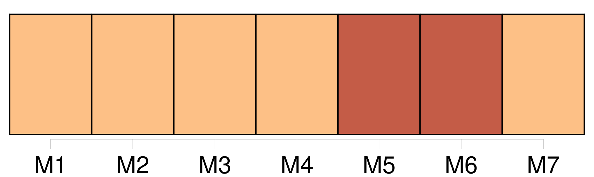

Longueur nb maillons : 626 mentions |
 |
Audoux -De la ville au moulin 1 5-20 [2 phrases]
[J'] abaissai de nouveau les paupières, espérant que tout cela disparaîtrait et que [j'] allais me retrouver chez [mes] parents, dans la pièce un peu sombre où étaient les lits de [mes] frères et sœurs, et dans tous les coins, entassés pêle-mêle, des jouets de toutes sortes et de toute couleur. Pour m'assurer que [j'] étais bien éveillée, [je] cherchai à reconnaître les bruits. [1 phrases] Seul, un peu en arrière de [moi] , un homme parlait à voix basse, et malgré toute [mon] attention, il [me] fut impossible de distinguer la moindre de ses paroles.
[Je] comprenais pourtant, à la façon dont il appuyait sur les mots qu'il donnait des indications précises, et faisait des recommandations très importantes. [2 phrases] [je] la reconnus aussitôt quoiqu'elle fût plus assourdie encore.
C'était [mon] cher papa qui parlait, et dans [ma] joie de le savoir là, [je] fis un brusque mouvement pour me tourner vers lui, mais au même instant, [je] ressentis dans la hanche une douleur qui [m'] arracha un cri aigu et [m'] obligea de rester immobile. La souffrance qui réveillait si brutalement [mon] corps réveillait avec la même brutalité [ma] mémoire. Toute la clarté de la salle sembla entrer d'un coup dans [mon] cerveau pour mieux éclairer l'épouvantable scène qui avait eu lieu chez nous quelques heures plus tôt. [Je] revis [mon] père les deux poings levés, et [ma] mère dressée en face de lui comme la plus méchante des femmes. [Je] revis [mon] frère, le doux Firmin, pâle et comme pétrifié, tendant vers eux ses mains frêles. [Je] revis Angèle, [ma] sœur, agenouillée et demandant du secours à Dieu, et [j'] entendis les cris terrifiés de Nicole et Nicolas, les deux jumeaux.
Puis [je] me revis moi -même lancée entre [mes] parents pour les séparer, et [je] crus sentir de nouveau le choc qui [m'] avait jetée à terre ainsi que le poids énorme de deux créatures en furie que [ma] chute avait entraînées et qui s'étaient abattues ensemble sur [moi] De ce qui s'était passé ensuite [je] ne savais rien.
[Je] me souvenais seulement des cahots du fiacre qui [m'] avait amenée à l'hôpital, et de la question directe du médecin au vieux cocher : « C'est votre voiture qui [lui] a passé sur le corps?
Le même médecin, penché à présent sur [moi] [me] demandait : [Je] ne répondis pas. [J'] écoutais le pas glissé de deux personnes qui cherchaient à s'éloigner sans bruit.
[J'] étais sûre que c'étaient [mon] père et [ma] mère qui s'en allaient ainsi, et malgré la douleur de [ma] hanche, [je] voulus me dresser pour les appeler, mais le médecin appuya des deux mains sur [ma] poitrine, en disant :
Penché sur [moi] , il [me] cachait une partie de la salle, mais dans l'ouverture que formait l'un de ses bras, [je] voyais [mes] parents gagner la sortie. [2 phrases]
[Ma] mère si légère d'habitude, marchait presque lourdement, et [mon] père la suivait, tête basse, et son chapeau à la main comme à un enterrement. [J'] en ressentis un immense chagrin.
Et tandis que le médecin continuait à s'informer de [ma] souffrance, des larmes se pressèrent en foule sous [mes] paupières, et malgré [moi] , jaillirent avec force. Les jours suivants, la douleur de [mon] corps devint si vive que [je] n'apportai d'attention à rien d'autre qu'à elle. La présence même de [mes] parents [me] laissait indifférente. [Je] souffrais. [Je] souffrais atrocement et sans répit, et [mon] immobilité parfaite n'avait pas un seul instant raison de cette souffrance. Pendant la nuit, [je] la sentais à travers une somnolence insupportable, et dont [j'] essayais de sortir par des soubresauts violents qui augmentaient [mon] mal. [1 phrases] Un homme, toujours le même, levait sur [moi] un marteau, et cherchait à [me] briser la hanche en la frappant à grands coups.
L'infirmière effrayée des cris sourds que [je] poussais venait [me] parler en mettant sa main sur [mon] front, et [je] m'efforçais [moi -même] de chasser la somnolence et son rêve. Cet état dura une semaine qui [me] parut plus longue que tout [mon] temps déjà vécu.
Puis, l'homme au marteau céda sa place à un tombereau plein de pierres dont une roue [m'] écrasait la hanche, mais de temps à autre, [je] réussissais, pour une minute, à soulever le lourd tombereau, et cette minute sans souffrance [m'] était plus précieuse que la clarté du soleil. [1 phrases] [Mon] mal qui continuait à veiller pendant la nuit s'endormait parfois durant le jour.
Dans ces moments -là, il [me] venait un grand désir de remuer, car [je] pensais à la maison, où malgré [mes] quatorze ans seulement [j'] étais si nécessaire. Qui donc prenait soin des jumeaux en [mon] absence?? Ce n'était pas [ma] mère occupée au dehors ainsi que [mon] père. [2 phrases] Et [je] n'avais guère confiance en la femme de ménage, vieille et toujours lasse. Et puis, qui donc à part [moi] pouvait faire obéir l'espiègle Nicole et le turbulent Nicolas??
Et [mon] imagination créait mille dangers auxquels les deux enfants ne pouvaient échapper.
[Ma] mère essaya de [me] tranquilliser en [m'] assurant que tout allait bien à la maison, et [mon] père agacé par [mon] insistance finit par [me] dire : [1 phrases]
Heureusement, [mes] parents amenèrent bientôt avec eux toute la petite famille. Non, [je] n'étais pas indispensable à la maison et [je] dus en convenir quoique [j'] en fusse un peu mortifiée.
Les jumeaux avaient bonne mine et ils gardaient un air si sage que [je] ne trouvais aucune recommandation à leur faire. [1 phrases]
À sa mort, trois ans plus tôt, [j'] étais déjà grande et forte et [ma] mère avait décidé que [je] resterais à la garde des jumeaux, et qu'on [m'] adjoindrait une femme de ménage pour [m'] éviter les gros travaux. [6 phrases]
Dès sa première visite Firmin tout joyeux s'était attardé auprès de [mon] lit, pour [me] dire : [2 phrases]
Que de fois, le soir, tout grelottant de fièvre dans son lit, [je] l'avais vu se torturer l'esprit pour essayer de découvrir le motif de la désunion avec l'espoir d'y apporter remède. [6 phrases] Mais Firmin et [moi] n'avions nulle envie de dormir. [7 phrases]
» Et [je] revoyais le mince visage de [mon] frère, tout épanoui de joie et de confiance en l'avenir. Firmin n'avait qu'un an de moins que [moi] , mais il était si petit et si faible qu'on l'eût dit beaucoup plus jeune.
Nous nous aimions profondément, et pour [mon] compte, j'aurais pu jurer que, de toute [ma] famille, c'était lui qui [m'] était le plus cher. [1 phrases] Firmin [m'] apprenait le soir ce qu'on lui avait enseigné pendant le jour, à l'école. [Je] retenais les leçons plus facilement que lui, et il [m'] arrivait d'être à [mon] tour son professeur. [Je] lui faisais surtout réciter ses fables qu'il ne parvenait pas à retenir malgré toute sa bonne volonté. [20 phrases]
lui demandais [-je] en le voyant rentrer en retard et tout penaud. [5 phrases]
Et quand il nous arrivait, à Firmin et à [moi] de jouer avec les jumeaux et de les faire rire jusqu'à les rendre malades, elle se tenait à l'écart, sans rire ni se fâcher. [1 phrases] C'était au cours d'une rougeole qui nous obligeait, Firmin et [moi] , de garder la chambre. [3 phrases] [Je] devins vite la belle Sita dont il était le respectueux serviteur. Coiffé d'un énorme turban fait d'une serviette éponge, il venait à tout instant prendre [mes] ordres. Il se tenait devant [moi] , les jambes ridiculement arquées, et les bras si drôlement appuyés sur la tête que [j'] éclatais de rire à chaque fois. De plus [je] ne pouvais retenir le nom bizarre de ce serviteur hindou, et [je] l'appelais Gigotar. [5 phrases] À me souvenir de ces instants, [ma] tranquillité s'affermissait.
[Je] me revoyais déjà de retour à la maison où [je] retrouvais la gaieté si amusante de [mon] frère, les caresses des deux petits, et enfin toute la tendresse de [mes] parents avec leur bon accord revenu. Dans la joie de ce jour proche [j'] oubliais de rester immobile. [2 phrases]
Un chien hargneux s'était caché dans [ma] hanche, et au plus petit mouvement de [ma] part, il mordait et déchirait et sa colère était lente à s'apaiser. [Je] n'aurai pas la joie du retour à la maison. Et qui sait si [je] rentrerai jamais dans cet appartement d'où [je] suis sortie un jour, blessée de telle sorte que [je] vais en porter la marque toute [ma] vie. Dans un instant, [mon] père et [ma] mère viendront [me] prendre pour [me] conduire au moulin de la Haie, chez oncle meunier, où [je] continuerai à vivre étendue, en attendant [ma] complète guérison. Après des semaines et des semaines de souffrance, il va [me] falloir rester des mois et des mois, sans essayer de marcher, même avec des béquilles. [1 phrases]
À [mes] parents anxieux des suites de l'accident, il a répondu d'un ton sec :
[Elle] le sera certainement. [1 phrases] Il a un air fâché que [je] ne lui ai jamais vu. Et, sans embrasser sa sœur ni tendre la main à son beau-frère, il [me] soulève de la banquette et [m'] emporte jusqu'à la voiture longue et basse, dans laquelle [je] passerai dorénavant toutes [mes] journées. En traversant le village, [j'] éprouve une grande honte à être vue dans cette voiture d'infirme. [2 phrases]
Mes parents marchent de chaque côté de [moi] , et leur pas, et celui d'oncle meunier font à peine plus de bruit sur le gravier que les roues caoutchoutées de [ma] voiture. [2 phrases] En approchant, [je] vois bien que c'est son mari qu'elle regarde et non pas nous. Elle se tient plus droite et plus raide que jamais, et son visage [me] paraît plus autoritaire encore. Va-t -elle [me] gronder, de [me] faire rouler ainsi dans une voiture?? [Je] me souviens qu'elle n'aime pas les malades. Cependant, elle se penche sur [moi] pour [m'] embrasser, mais c'est du bout des lèvres, on dirait même avec dégoût.
Et sans un mot de bienvenue à [mes] parents, elle passe la barrière, et marche en avant comme si nous ne connaissions pas le chemin, et qu'elle fût venue seulement pour nous le montrer. À [mon] étonnement ce n'est pas chez elle qu'elle nous conduit. [1 phrases] C'est là que [je] vais demeurer en attendant le moment où [je] pourrai marcher comme tout le monde.
Tante Rude [me] l'apprend sans douceur, tandis que [mon] père et [ma] mère, avec des mots affectueux, et mille précautions [m'] installent dans un lit tout préparé. [Mon] installation finie, [mes] parents s'en vont au moulin avec tante Rude et oncle meunier. [J'] entends grincer derrière eux la claie du passage. [6 phrases] [J'] ai un réel contentement à [me] retrouver près d'elle. À la lueur d'une lampe pendue au plafond, [je] la regarde aller et venir dans la maison, où elle répare le désordre que nous venons de faire. [2 phrases]
Puis, après avoir ranimé le feu et fait chauffer pour [moi] un bol de lait, elle approche une chaise et s'assied auprès de [mon] lit. Elle est elle -même si contente de [me] voir là qu'elle se met à parler librement de toute chose. [2 phrases] À l'âge de six ans, alors que [mes] parents [m'] avaient confiée à tante Rude pour une assez longue convalescence, c'est Manine qui s'était occupée de [moi]
Elle [m'] emmenait partout où elle avait à faire, et il arrivait que nous passions des journées entières, aux champs, au jardin ou à la rivière.
Ce qui [me] plaisait le plus dans les travaux de Manine c'était de suivre les dindes et les pintades qui se cachaient dans les haies pour pondre, et dont il nous fallait chercher et découvrir les œufs.
[J'] étais paresseuse le matin, et Manine [me] grondait souvent pour [me] faire lever, mais lorsqu'elle [me] disait : « Dépêche -toi, on va suivre une dinde », [j'] étais vite réveillée et vêtue. [6 phrases]
Elle s'asseyait sur l'herbe alors, tirait son tricot de sa poche et [m'] interdisait le moindre bruit. [3 phrases] Ces courses du matin [me] paraissaient si amusantes que [je] devins vite capable de les faire seule. [J'] avais remarqué que les pintades tout comme les dindes cessaient de caqueter lorsqu'elles approchaient de leur nid.
Aussi, à ce moment -là, [je] me dissimulais de [mon] mieux en redoublant d'attention et [je] voyais la dinde ou la pintade allonger le cou, s'aplatir, et s'avancer à grands pas raides vers sa cachette.
La première fois que [je] revins au moulin avec [mon] tablier plein d'œufs et que [je] racontai comment [je] m'y étais prise pour les avoir, oncle meunier rit de [mon] adresse, et dit :
Ce soir, Manine et [moi] , nous nous plaisons au rappel de ces jours lointains, et la douceur que nous en ressentons, est comme un large écran qui nous cache le jour présent et nous en fait oublier la tristesse. [Mes] parents n'ont pas voulu attendre à demain pour repartir. Tous deux [m'] ont dit avant de regagner la gare. [1 phrases]
» Mais, lorsque le train qui les emportait commença de rouler dans la campagne, [je] tendis longuement l'oreille à la dure vibration qu'il laissait derrière lui.
Il [me] semblait que [mon] père et [ma] mère tenaient le bout d'une chaîne solidement rivée à [ma] poitrine, et que c'était cette chaîne -là qui se tendait et vibrait si durement dans l'espace. [4 phrases]
Et toujours [je] croyais voir une mystérieuse étoile brillant pour [moi] seulement, dans un ciel tout chargé d'orage.
Les carreaux de l'imposte s'éclairaient du jour levant, lorsque le sommeil vint enfin [me] fermer les yeux. [2 phrases] Par le sentier qui longe la maison et remonte à la route, [je] vois revenir, le soir, les faneurs, silencieux et traînant les pieds, las d'une interminable journée de travail et de chaleur.
Quelques-uns s'arrêtent au seuil de notre porte pour s'enquérir de [ma] santé, et toujours [je] ressens de l'humiliation à être vue couchée comme une paresseuse. À cause de la fenaison, Manine n'a guère le temps de s'occuper de la petite Reine, qu'elle a mise au monde le lendemain même de [mon] arrivée.
Levée avec le jour, elle change en hâte les langes de l'enfant, approche le berceau de [mon] lit, et s'en va en courant aider tante Rude au moulin, pour revenir plus vite encore aux heures de la tétée. Malgré la gentillesse du bébé qui commence à [me] sourire et [me] connaître, malgré la gaieté bruyante de Clémence, [je] m'ennuie de l'absence de Manine. [Je] m'ennuie même si fort qu'il [m'] arrive de descendre du lit sans tenir compte de la défense qui [m'] en est faite.
[Je] le regrette vite, car dans [ma] hanche, le chien hargneux
Manine manque d'argent pour acheter de l'étoffe, aussi, [je] taille brassières et petites robes dans de vieux jupons de diverses couleurs que [j'] assemble de [mon] mieux. [3 phrases] Elle [m'] en parle à tout propos et si [je] ris de son insistance, elle se fâche et pleure.
Souvent, assise à côté de [moi] , [elle] se regarde dans un bout de miroir qu'elle traîne partout avec elle, et, du bout de l'ongle, avec une inlassable patience, elle enlève une à une les petites parcelles de peau sèche que le hâle a brunie et fait craqueler sur son visage. [1 phrases]
La présence de Manine [me] fait moins faute depuis que Mme Lapierre vient passer ses après-midi avec [moi] Madame Lapierre est une jeune femme infirme, venue à la Haie quelques années plus tôt sur le conseil de [mes] parents qui l'ont connue à Paris. [2 phrases]
[J'] en suis un peu jalouse pour nos jumeaux, que [je] trouve cependant d'une beauté surprenante. Arrivée auprès de [moi] , Mme Lapierre jette ses béquilles à terre avec un geste de lassitude, comme si au lieu d'un soutien elles étaient pour elle un fardeau écrasant. [1 phrases]
Le petit Jean les ramasse et les pose en travers de [ma] voiture, et comme pour encourager sa mère à la patience, il lui dit :
Ces visites de Mme Lapierre déplaisaient fort à tante Rude, qui [m'] a tout de suite avertie que l'enfant était sans père et la mère sans mari.
[Je] ne vois rien de répréhensible à cela, comme a l'air de le penser tante Rude, et la compagnie de Mme Lapierre [me] devient de jour en jour plus agréable.
Manine est sûrement de [mon] avis, car aussitôt qu'elle aperçoit la mère et l'enfant, elle pousse [ma] voiture sous le gros noyer qui ombrage une partie de la maison et elle apporte pour Mme Lapierre sa plus belle chaise de paille.
Oncle meunier fait bon visage à la jeune femme, mais tante Rude [me] demande souvent : [Je] serais bien en peine de le dire ; nous n'avons pas de conversations suivies. [1 phrases] C'est, pour elle, des projets touchant l'avenir de son enfant, et, pour [moi] , l'espoir de voir arriver aux prochaines vacances, les petits avec nos parents réconciliés à jamais. C'est encore la lecture si intéressante des lettres de Firmin [me] tenant au courant de ce qui se passe chez nous, et des faits amusants qui arrivent journellement à l'école. [11 phrases] Vers la fin de juillet [ma] mère [me] prévint que les enfants passeraient leurs vacances à Paris. [2 phrases]
Ce fut pour [moi] une bien mauvaise nouvelle. Une lettre de Firmin arrivée peu après, [m'] enleva une partie de [ma] peine en [me] faisant rire.
Il disait : Tout de même, de penser que [tu] pleures là-bas [toute seule] , ça me donne envie de pleurer aussi ; alors, pour n'y plus penser, je [t'] écris. [1 phrases] « J'ai d'abord à [te] dire que papa et maman sont toujours bien sages. S'ils ne sont pas aussi gais qu'avant c'est parce que [tu] n'es pas avec nous, cela va de soi. [1 phrases]
Maman m'a bien défendu de [t'] en parler, aussi, je le fais en cachette. « J'ai aussi à [te] dire que les jumeaux font bien enrager la nouvelle femme de ménage. [4 phrases] Sais [-tu] qu'hier Angèle l'a vue manger un fromage tout entier à son dessert. [1 phrases] De [ton] temps, il y en avait pour toute la famille d'un fromage. [2 phrases] Au lieu de nous donner comme [toi] une grosse tablette au goûter, elle nous en donne une toute petite. [3 phrases]
Moi je n'oserais pas, [tu] le sais bien. « Je vais encore [te] confier un secret. [2 phrases] « À bientôt [ma grande sœur] , « [Ton] Firmin.
» L'automne revenu avec ses pluies [m'] oblige de rester dans la maison et empêche Mme Lapierre de venir auprès de [moi] Aussi, certains jours, écrasée par l'ennui, [je] reste des heures entières sans mouvement, les mains croisées sous [ma] tête.
[Je] repousse même la petite Reine que Manine se plaît à mettre dans [mes] bras en disant : Un désir violent, lancinant même, de revoir les miens [m'] est devenu un mal plus sensible que celui de [ma] hanche.
Il [me] semble qu'en [me] privant de Firmin et des petits pendant les vacances on [m'] a privée d'une chose nécessaire à la vie, et que [je] ne tarderai pas à en mourir. Tante Rude qui ne peut supporter personne au repos [m'] apporte de la couture qu'elle retrouve souvent le soir telle qu'elle [me] l'a donnée le matin. [1 phrases] Devant lui [je] laisse couler [mes] larmes. [1 phrases] Il [me] parle surtout de sa femme en l'excusant : « [Tu] sais, elle n'est pas méchante, elle est seulement autoritaire. [2 phrases]
»
[Je] crains de lui dire que si on a été trop bon pour tante Rude, en retour elle n'est guère douce aux autres. [7 phrases] Ainsi que [je] m'y attendais, à l'heure de la tétée, tante Rude [m'] a laissé le soin de tenir sa promesse à Manine. [Je] ne voulus pas attendre le réveil complet de la mignonne pour approcher le biberon de sa bouche. [3 phrases]
Lasse et ennuyée, [j'] essayai de divers moyens pour la faire boire, mais tous furent inutiles. Le soir venu, tante Rude, qui ne pouvait gronder l'enfant s'en prit à [moi] , et [m'] accusa de maladresse.
Elle prépara un nouveau biberon qu'elle glissa sous [mon] oreiller, puis, sans plus se soucier de nous, elle tira la porte sur elle jusqu'au lendemain. La petite Reine ne voulait pas s'endormir, rien ne la calmait ; ni le mouvement régulier du berceau, ni les airs lents que [j'] imitais de Manine. [2 phrases] [Je] pensai alors aux convulsions, et [je] suppliai Clémence d'aller chercher du secours au moulin. Mais Clémence accroupie sur le pied de [mon] lit refusa en pleurant, car si elle était effrayée par les cris de sa petite sœur, elle l'était bien davantage à l'idée de traverser le jardin dans l'obscurité. Tout ce que [je] pus lui promettre « en pour » ainsi qu'elle avait coutume de dire ne put la décider. Dans [mon] impuissance à me déplacer [moi -même] , [je] fus prise de désespoir et me mis à pleurer aussi.
Et tout à coup Clémence [me] dit : [Je] savais que cela ne [m'] était pas possible, cependant [je] pensais que le simulacre pourrait calmer l'enfant.
Et, tout en regrettant de ne pas posséder la belle noisette brune qui terminait le sein de Manine, [j'] approchai la petite Reine [ma] poitrine maigre et sans forme. Elle se calma instantanément ; mais, avec une adresse que [je] n'avais pas prévue, elle saisit une mince partie de chair et l'aspira avec frénésie. Cette succion [me] fit un mal atroce, on eût dit qu'on [m'] arrachait de fines lamelles de chair ayant leurs racines dans le fin fond du cœur. Pour échapper à ce supplice, [j'] essayai de repousser la petite Reine. [1 phrases]
Elle resta ainsi à [me] regarder, et ses yeux grandement ouverts [m'] adressaient de tels reproches pour la supercherie que [je] me crus obligée de me défendre comme devant une grande personne : [1 phrases]
Et, tout en pleurs, autant de la pitié qu'elle [m'] inspirait que du mal qu'elle continuait à [me] faire, [je] lui présentai le lait qui avait gardé toute sa tiédeur à l'abri de [mon] oreiller : [1 phrases]
Et lorsqu'elle eut vidé le biberon jusqu'à la dernière goutte, toute anxiété et souffrance oubliées, [je] l'embrassai longuement au front :
Elle soupira comme pour [me] faire savoir qu'elle avait quand même du chagrin, et elle s'endormit avant que [j'] eusse pris le temps de balancer le berceau. [1 phrases]
Rassurée sur sa petite sœur elle sauta de [mon] lit à terre en demandant : [5 phrases]
Elle énuméra tous ses vêtements, jusqu'à ses souliers, et lorsque [j'] eus répondu oui pour chaque chose, elle se mit à rire et à sauter joyeusement par la chambre. [2 phrases]
Elle mit sur [mon] front un baiser tout pareil à celui que [j'] avais donné à sa fille la nuit d'avant, et la voix tout émue, elle [me] dit : [Je] n'eus pas à attendre si longtemps [ma] récompense ; Manine l'apportait avec elle. Pendant son court séjour à Paris, elle avait trouvé le moyen de se rendre chez [mes] parents.
Et d'eux, et des enfants, elle avait tant à [me] dire, que la journée passa tout entière avant qu'elle n'eût fini.
Et si, dans les jours qui suivirent, [je] continuais à garder les mains croisées sous [ma] tête, ce n'était plus pour ressasser [mon] ennui, c'était pour ne pas [me] distraire de cette joie qui [m'] était venue et qui [me] faisait pleurer par instant presque aussi fort qu'une peine. Comme par miracle, les paroles de Manine [m'] avaient transportée auprès des miens. [Je] vivais avec eux, [je] savais où les prendre à toute heure, et plus rien de ce qui se passait chez nous ne pouvait [m'] être étranger maintenant. Le passé se reliait au présent et tous les souvenirs arrivaient à [mon] appel. Ils arrivaient en masse, se heurtant et voulant se montrer tous à la fois, mais [j'] y mettais de l'ordre pour les faire durer. C'était à [mes] parents que [je] pensais tout d'abord. Combien ils avaient été indulgents et patients lorsque [j'] avais remplacé grand'mère dans le ménage. [2 phrases] » disait en riant [mon] père, lorsque la bouilloire pleine d'eau [m'] échappait et tombait avec un fracas assourdissant sur le carrelage de la cuisine. Quand un plat [m'] échappait de même c'était au tour de [ma] mère de dire : « Allons!! [1 phrases] En avais [-je] fait se disperser des plats et des assiettes!! Et les tasses dont [j'] avais supprimé les anses. [1 phrases] Sans compter celles que [j'] avais détériorées par le fond en les laissant brûler sur le fourneau avec tout leur contenu. [Je] m'épouvantais alors de ces petits accidents comme de véritables catastrophes, mais au lieu de [me] gronder, [mes] parents [m'] excusaient et [m'] encourageaient à faire mieux.
Ainsi [je] reprenais confiance, et peu à peu, [j'] étais devenue adroite et attentive. Auprès de Firmin, [je] m'attardais comme auprès d'un divertissement à cause de la variété de ses jeux qu'il menait, la plupart du temps, comme des faits réels. [3 phrases] Et tout à coup, arrivant à une rue barrée où se tenait un agent de police, il s'était immobilisé sur sa chaise en [me] regardant et rougissant de tout le visage. Inquiète, [j'] avais demandé : « Tu t'es fait mal?? [1 phrases]
Et [j'] entendais encore le rire éclatant de nos parents, et [je] me souvenais du claquement joyeux des baisers répétés qu'ils avaient mis sur nos joues, ce soir -là, au moment du coucher. [2 phrases] Tante Rude pouvait se fâcher et crier, le soleil pouvait bouder derrière ses nuages, la pluie pouvait tomber à verse ou noyer de brouillard toute la campagne, rien de tout cela ne [m'] attristait.
Il y avait à Paris une maison dans laquelle [je] pouvais entrer malgré fenêtres et portes closes, et où [je] trouvais toujours des êtres capables de répandre sur [moi] une grande chaleur et beaucoup de lumière. L'hiver passa emportant chaque jour avec lui un peu de [mon] mal. Et quand le printemps revint, le mauvais chien caché dans [ma] hanche avait enfin usé ses crocs.
Les béquilles de Mme Lapierre [me] soutinrent pendant une semaine, puis ce fut une solide canne fabriquée par oncle meunier, et que [j'] abandonnais à toute minute, tant [j'] avais hâte de me déplacer par [mes] propres moyens. [2 phrases]
[me] répétait oncle meunier.
Et pour [moi] il reprenait ce qu'il avait coutume de se dire à lui -même d'un ton moqueur :
Dans [ma] précipitation de marcher sans soutien d'aucune sorte, il y avait surtout la hâte de savoir jusqu'à quel point [j'] étais infirme, car [je] n'avais pas oublié les paroles du médecin de l'hôpital, ni la sécheresse de sa voix qui était comme un blâme à l'adresse de [mes] parents : « Boiteuse, [elle] le sera certainement ». Boiteuse, [je] l'étais, certainement.
Et pour ne pas sentir [mon] corps pencher à chaque pas, [je] m'efforçais de me tenir très droite, et de marcher sur l'extrême pointe de [mon] pied trop court.
Oncle meunier qui avait tenu à [m'] accompagner dans [ma] promenade [me] dit tranquillement : [1 phrases] Le désagrément ressenti de [mon] infirmité ne dura que quelques jours.
D'être boiteuse ne pouvait pas [m'] empêcher de reprendre [ma] place à la maison, et [j'] annonçai chez nous la nouvelle de [ma] guérison avec l'espoir que [ma] mère allait [me] rappeler sur l'heure.
La réponse ne [m'] arriva qu'après un long retard. « Sois patiente et prends des forces » [me] disait [ma] mère. [1 phrases]
Elle parlait d'une foule de choses que [je] savais déjà, mais de la date de [mon] retour il n'était pas question dans sa lettre.
[Je] devins maussade ; l'impatience [me] prit et [j'] en arrivai bientôt à dire que [j'] étais assez grande pour agir à [ma] guise, et que [j'] allais partir pour Paris sans attendre l'appel de [mes] parents.
Oncle meunier n'alla pas contre [ma] volonté de départ, il [me] dit seulement :
[Je] me défendis :
Oncle meunier ne fut pas embarrassé pour trouver d'autres empêchements à [mon] départ, mais [j'] eus réponse à tout.
À la fin comme pour vaincre [mon] entêtement, il [me] dit : [3 phrases] Ce fut là [ma] seule réponse, car à toute heure [je] retrouvais dans ses yeux la même tendresse que dans ceux de [ma] mère ; et le même sourire sur ses lèvres plus fortes.
Et comme, pour le moment, [j'] apercevais dans son regard et dans son sourire une inquiétude qu'il cherchait à dissimuler, [je] l'assurai de [mon] affection et lui promis d'attendre encore.
Tante Rude qui ne se souciait pas plus de [ma] peine que de [ma] joie, [me] chanta une autre chanson : [Je] la laissais dire pour ne pas l'entendre crier, car à cela [j'] avais une réponse précise. Les foins et la moisson n'étaient pas [mon] affaire.
[Je] tenais surtout à remplacer la femme de ménage qui coûtait si cher à [mes] parents, et soignait si mal les enfants. Au lieu de l'appel de [ma] mère ce fut une lettre de Firmin qui arriva. [5 phrases] « Maintenant, prépare -toi à une grande nouvelle, si grande, [ma grande sœur] , que [tu] ne pourras pas y croire en une seule fois.
La voici :
»
Oncle meunier ne parut pas trop surpris, et tante Rude qui le paraissait moins encore, offrit de [m'] aider à nettoyer et mettre en ordre notre propre maison qui était mitoyenne avec celle de Manine. [1 phrases] Toute la nuit, [j'] étais restée sans dormir, attentive au passage des trains, me mettant debout dès que l'un d'eux s'arrêtait en gare.
[Je] n'aurais su dire pourquoi, à ce dernier train, [j'] étais sortie de la maison pour courir au bout de chemin. [1 phrases]
À cette heure, où tout faisait encore silence, [j'] entendis marcher au loin, et peu après [je] vis s'avancer le groupe sombre que formait toute [ma] famille réunie. Le cœur battant de joie, marchant sur l'herbe pour assourdir le bruit irrégulier de [mon] pas de boiteuse, [j'] allais à la rencontre de ce groupe.
[J'] allais vite, mais lorsqu'en approchant [je] pus distinguer chacun des miens, une étrange faiblesse [m'] obligea de [m'] appuyer contre un arbre. Eux, dans le demi-jour, ne [me] reconnurent pas. Les jumeaux [m'] apercevant s'écartèrent comme apeurés, et [mes] parents détournèrent la tête. [Je] voulais les appeler, [je] voulais leur faire signe de venir à [moi] , mais [j'] étais comme paralysée.
Et brusquement Angèle et Firmin qui venaient les derniers se retournèrent et crièrent [mon] nom.
[Ma] mère fut aussi vite qu'eux auprès de [moi] — [C'] était donc [toi] ??
[me] dit -elle. [Mon] père et les jumeaux s'approchèrent rapidement aussi. [1 phrases]
Firmin qui n'avait pas grandi et se haussait pour [m'] embrasser s'excusa ainsi de ne pas [m'] avoir reconnue du premier coup :
Et puis [tu] es presque aussi grande que lui.
Tous s'étonnèrent de [me] voir si grande, car maintenant [je] dépassais [ma] mère dont la taille était cependant élevée. Comme Firmin et Angèle [m'] entraînaient sur la route, [mes] parents s'arrêtèrent pour [me] regarder marcher.
[J'] eus pitié de leur visage consterné, et, l'air enjoué, [je] répétais ce qu'avait dit oncle meunier : La journée passa, rapide ; [mes] parents devaient repartir le soir même, ne pouvant disaient -ils perdre une seule journée de travail. [1 phrases]
Ils restaient à [mes] côtés de préférence, et s'ils avaient à se parler, ils le faisaient sans se regarder. [1 phrases] Après leur départ, [je] cessai bientôt d'écouter ce que [me] disaient Angèle et Firmin. [Je] suivais par la pensée nos parents remontant la route. Ils repartaient trop tôt à [mon] gré. Et, sans réfléchir qu'ils étaient partis depuis un bon moment déjà, [je] me lançai à leur poursuite. [J'] arrivai trop tard à la gare. [1 phrases] [Je] courus à la petite barrière de sortie et là, [j'] aperçus [mon] père et [ma] mère un peu à l'écart. Leur visage [me] parut plus sévère encore, dur même et comme buté.
Oncle meunier placé entre eux, le visage sévère aussi leur parlait avec des gestes fermes et précis, et il [me] semblait l'entendre dire, en colère cette fois : [1 phrases]
[Mon] père monta aussitôt dans la voiture qui se trouvait devant lui, tandis que [ma] mère s'éloignait rapidement pour monter dans une autre voiture.
[Je] dus reculer pour laisser s'ouvrir la petite barrière, [je] restai là sans bien savoir ce que [je] voulais, bousculée par les voyageurs descendant du train.
Oncle meunier sursauta en [m'] apercevant : [1 phrases]
Une peine qui [me] serrait la gorge [me] fit une voix de toute petite fille, lorsque [je] dis :
Oncle meunier s'indigna :
[Je] ne pensais qu'à la séparation du wagon, mais devant le ricanement plein de mépris d'oncle meunier, [j'] eus l'intuition d'une séparation beaucoup plus grave, et, retenant [mes] pleurs, [je] répondis :
Et sans un mot de plus, lourde du poids de [ma] faiblesse et de [ma] joie gâchée, [je] m'appuyai au bras d'oncle meunier qui [m'] entraîna lentement sur le chemin du retour. En [m'] attendant, Angèle et Firmin s'étaient endormis sur leur chaise.
Oncle meunier les regarda puis il retrouva toute la douceur de sa voix pour [me] dire : [1 phrases] L'avenir devint très vite redoutable, car à [mes] questions directes, [ma] mère fut bien forcée de [m'] apprendre l'abandon définitif du foyer par son mari, et la demande en divorce qu'elle formulait contre lui. [1 phrases]
Et, autant qu'à Paris, disait -elle, elle comptait sur [moi] pour la remplacer auprès de [mes] frères et sœurs.
D'accord avec oncle meunier, [je] décidai de laisser Angèle et Firmin dans l'ignorance de ces choses. [1 phrases]
[Je] les prévins seulement que nous allions rester longtemps au moulin, par mesure d'économie.
Au grand contentement de tante Rude [je] demandai à faire la moisson en remplacement de Manine.
La petite somme que [m'] avaient laissée [mes] parents et qu'ils devaient renouveler chaque mois fut dépensée en moins de rien, et [je] me rendis compte que si [je] ne gagnais pas [moi -même] un peu d'argent [j'] allais être obligée de mesurer la nourriture aux enfants.
Tante Rude [me] dit : « À quinze ans toutes les filles gagnent leur vie ».
Oncle meunier [m'] expliqua : [1 phrases] Et comment [tes] parents le pourraient -ils, eux qui avaient déjà tant de peine à joindre les deux bouts??
[Tu] comprends [Annette] ?
[Je] fis signe que oui, tandis qu'en [moi -même] [je] répondais :
» À être restée si longtemps immobile, [mon] corps avait perdu toute souplesse et il [m'] était difficile de rester courbée derrière le faucheur, pour mettre en javelles le blé qu'il fauchait par trois sillons à la fois.
Incapable d'aller vite [je] me laissais distancer et le faucheur suivant [me] criait :
Et, à tout instant, sa faux sifflait à [mes] talons. Arrivée au bout du champ de blé, au lieu de me redresser [je] m'aplatissais de tout [mon] long sur la terre chaude, et, le visage caché, prête à pleurer sous les moqueries des autres moissonneuses, rebutée par ce travail trop dur pour [mes] forces, [je] décidais de l'abandonner sur l'heure et de rester ainsi étendue jusqu'au soir.
Puis l'instant de repos écoulé, entendant les hommes passer la pierre à aiguiser sur leur faux, [je] me levais d'un bond et [reprenait] [ma] place pour ramasser les épis, et coucher bien en rang les javelles du nouveau sillon.
Manine, pleine de pitié, ne [me] laissait rien faire chez nous et [m'] obligeait à [me] mettre au lit en rentrant ; mais [j'] étais trop lasse pour dormir, et [je] passais [mes] nuits à m'agiter en appelant le sommeil.
Au jour levant, pour [m'] exhorter au courage, [je] me tapotais les joues en disant comme autrefois grand'mère :
Il y avait des matins où il [me] fallait le répéter bien des fois avant d'obéir. Les travaux qui vinrent ensuite [me] furent moins pénibles. La batteuse même, sur laquelle [je] dus rester de longues heures à délier les gerbes ne [me] fit pas penser à la révolte quoiqu'elle [m'] eût étourdie et rendue sourde pour plusieurs jours. Et puis pour [me] payer de [ma] peine, [j'] avais les jumeaux ; tous deux se disputaient [mes] caresses et les leurs [m'] étaient aussi douces que le repos. [J'] avais encore la petite Reine que [j'] aimais presque à l'égal des jumeaux depuis la nuit où nous avions souffert et pleuré ensemble. [1 phrases] [Je] la prenais sur [mes] genoux, et [je] chantais pour l'amuser.
Elle [m'] écoutait sans que son regard se détachât du mien, remuant les doigts devant [ma] bouche comme pour saisir les mots ou les sons ; ou encore, elle mettait à hauteur de [mon] visage l'envers d'un de ses pieds, [me] montrant un talon soyeux et des orteils frais et roses et tout semblables à de petits fruits mûrissants. Et surtout, [j'] avais Firmin. [2 phrases]
Avec une faux, faite d'un bâton ou d'une plaque de tôle, il fauchait les cailloux et les mottes de terre de la cour, entraînant derrière lui Clémence et Nicole et leur disant fièrement : |

|
Il est possible de télécharger la ressource sur la page Ortolang |
Si vous avez des questions ou vous voyez des erreurs, merci d'envoyer un mail à silvia.federzoni89@gmail.com |